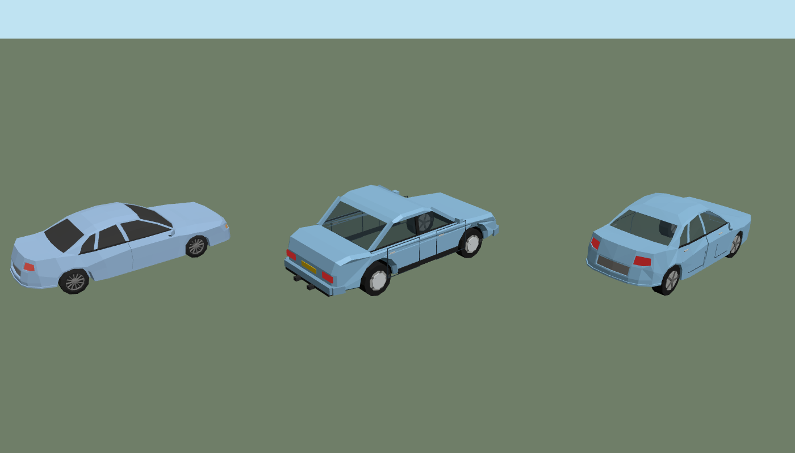
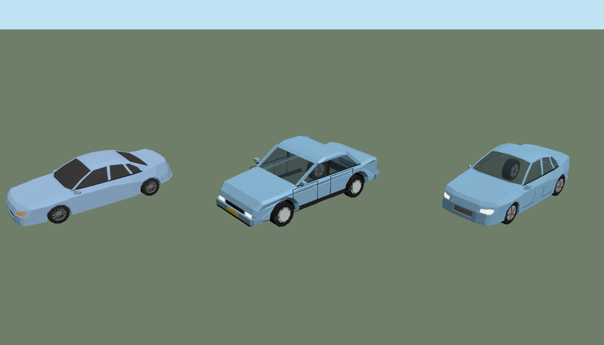
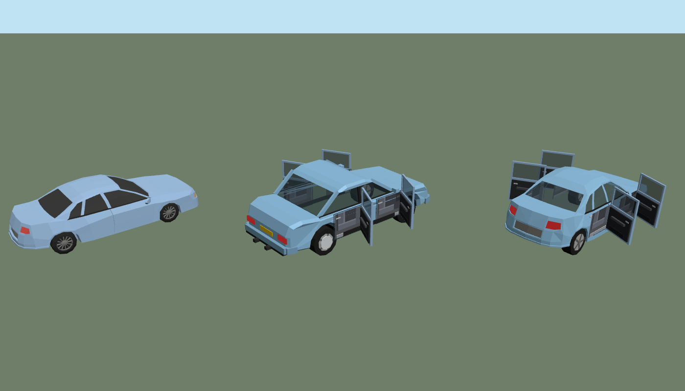
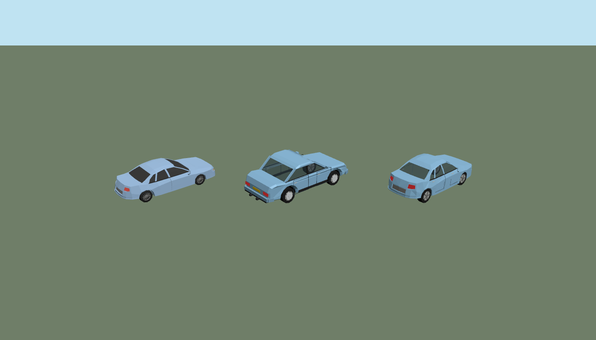
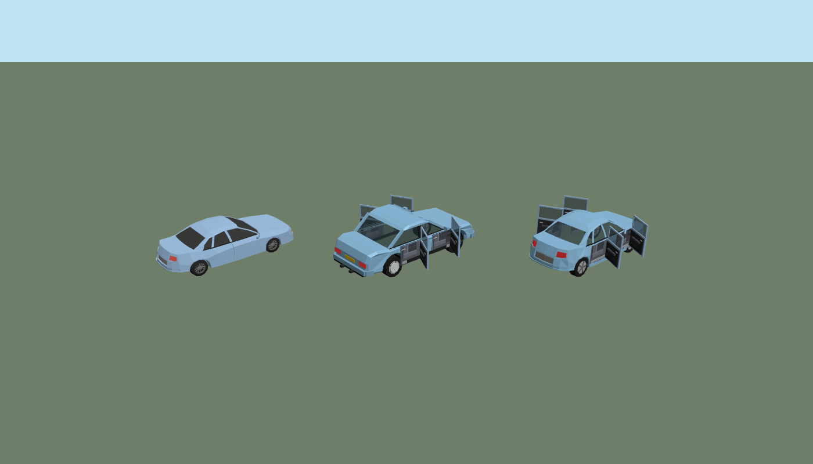

In elk beeld van links naar rechts: het Quaternius-origineel (Car.glb, CC0, buiten git geladen uit C:\Users\abuis\gde-assets\quaternius\cars\pack), onze procedurele sedan en de hybride (hun carrosserie omgezet naar vertexkleuren in game/js/models/qcar_sedan.js, met onze wielen, deuren, naden, lampen en schade). Zelfde kleur, zelfde hoek; headless Chrome, geen spelbelichting.





| Functie | Hybride |
|---|---|
| Wielen draaien en sturen | Werkt: onze wielgeometrie op hun wielplekken (hun eigen wielen, 420 driehoeken per stuk, vallen weg). |
| Kleurvarianten | Werkt: hun lak wordt de kleur van het voertuig. |
| Lichten | Werkt: koplampen en achterlichten in onze lampgroep. |
| Deurnaden | Werkt: de naden volgen de gebogen flank (gemeten per stukje van 30 cm). |
| Deuren open, interieur | Werkt: de deur zit op hun flank; het interieurvlak is hetzelfde. Het deurblad en de raamlijst zijn nog onze vlakke vorm, niet de hunne. |
| Schade (deuken) | Werkt, zonder NaN. Losse delen (grille, spiegels, wieldoppen) en hangende bumpers ontbreken: die horen bij onze bouwer. |
| Cabine-LOD | Onzeker: cabin3d.js plaatst dashboard en stoelen naar het profiel van onze sedan (dak 1,45); het hybride dak is 1,40. Niet in het spel bekeken. |
| Politie, taxi, ambulance, varianten (roest, tokkie, EV), tuning | Breekt: die zitten in onze bouwer; de hybride is alleen de gewone sedan. |
| Driehoeken | Meshes | |
|---|---|---|
| Quaternius-origineel (Car.glb) | 2.954 (romp 1.274, wielen 1.680) | 12 |
| Onze sedan | 1.908 | 12 |
| Hybride | 2.098 | 5 |